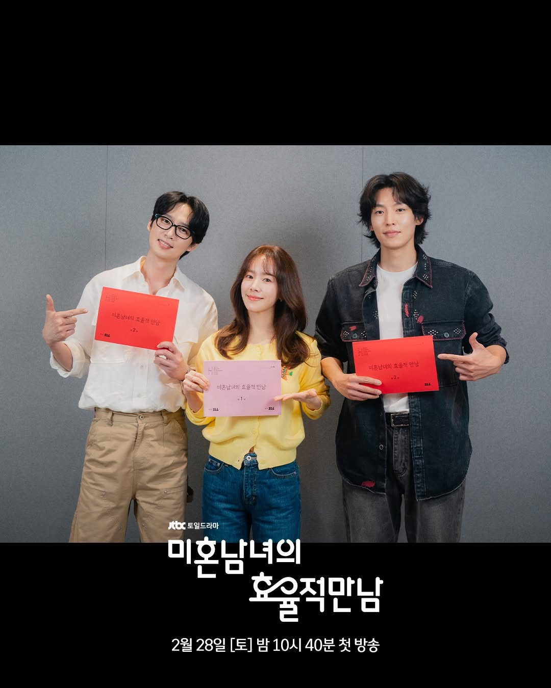
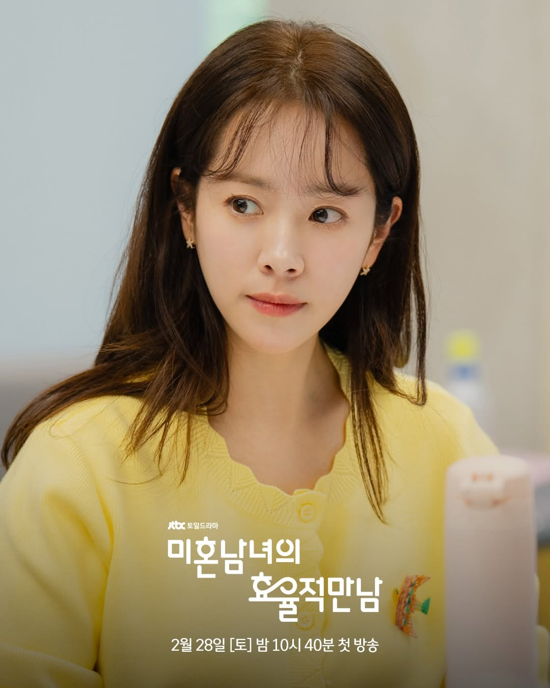
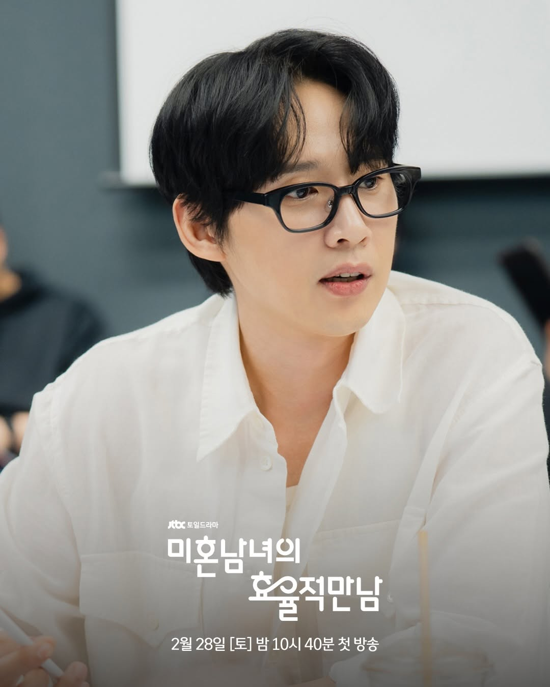
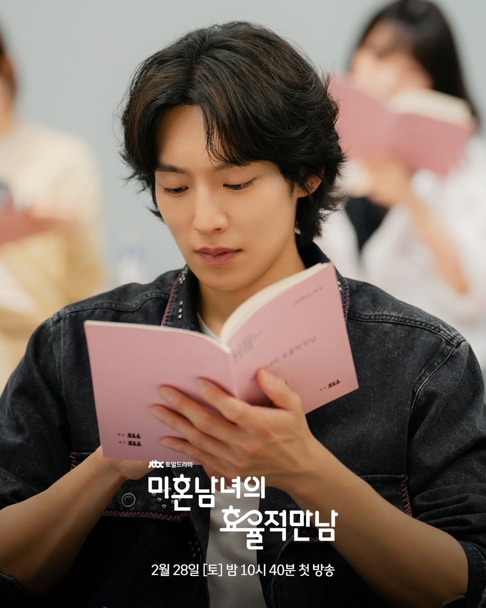
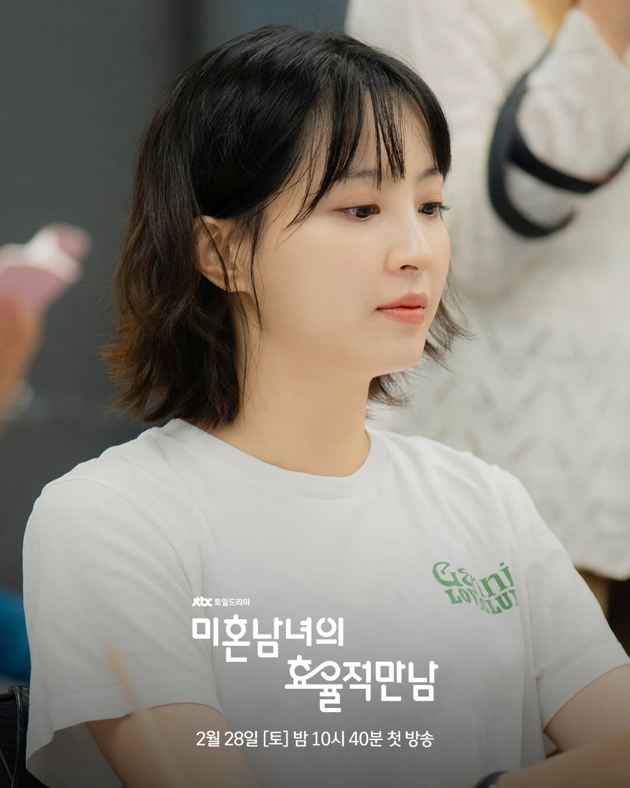
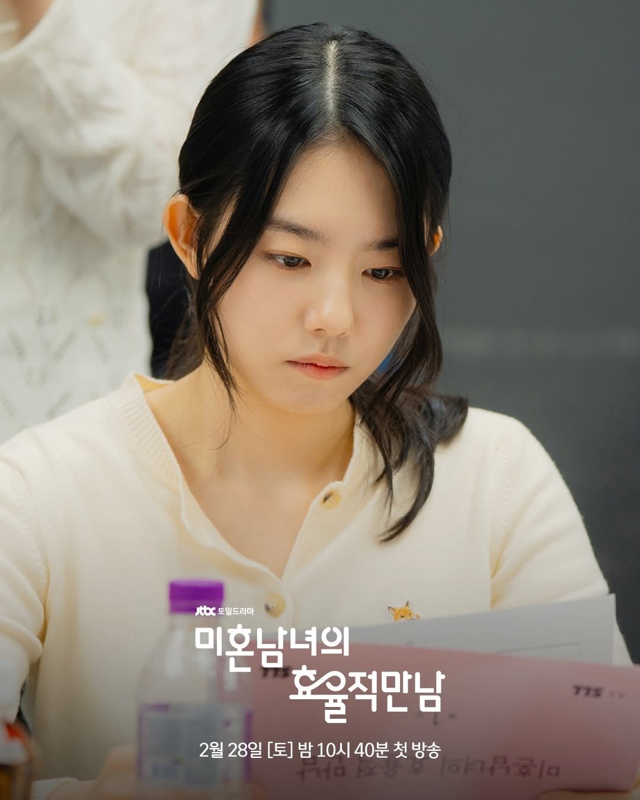

JTBC bagikan pembacaan naskah para pemeran untuk drama terbaru "Efficient Dating for Singles", yang akan tayang bulan depan.
Berdasarkan webtoon dengan judul yang sama, "Efficient Dating for Singles" menceritakan kisah Lee Ui Yoing (Han Ji Min), seorang wanita yang memutuskan untuk mengejar cinta dan terjun ke dunia kencan buta. Saat ia bertemu dua pria dengan pesona yang sangat berbeda, ia merasa terpecah di antara mereka—memicu perjalanan untuk menemukan arti cinta sejati.
Pembacaan naskah tersebut mempertemukan sutradara Lee Jae Hoon, penulis Lee Yi Jin, dan para pemeran, termasuk Han Ji Min, Park Sung Hoon, Lee Ki Taek, Jung Hye Sung, dan Kim So Hye.

Han Ji Min akan memerankan Lee Ui Young, seorang wanita yang jalur kariernya lancar tetapi kehidupan cintanya tetap stagnan.

Park Sung Hoon akan memerankan Song Tae Seob, seorang pria dengan penampilan lembut dan inti batin yang kuat, dengan caranya sendiri yang unik.

Lee Ki Taek akan memerankan Shin Ji Soo, pria muda yang tak terduga dan berjiwa bebas.

Jung Hye Sung akan memerankan Jung Hyun Min, seorang yang ceria dan berpikiran terbuka.

Kim So Hye akan memerankan Shim Sae Byeol, seorang karyawan baru yang canggung namun tulus.

- Sementara itu, Drama "Efficient Dating for Singles" dijadwalkan tayang pada Februari 2026 di JTBC.
~~
Source: JTBC /Soompi